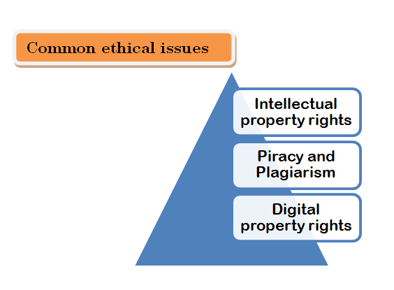

In past decade, cyber space has shown technological advances in leaps and bounds. We are in constant touch of this virtual world through computers and hand held devices like smart phones. This makes us the members of vast cyber society across the globe. This virtual world provides exposure of all kinds to all types of people – kids, grown ups, people with good and, malicious intentions, people from different communities and beliefs and several other profiles.
The liberal access to all kinds of information in cyber space needs a set of norms to govern the access and use of this information. Ethics informs us about the right and wrong aspects of anything – our beliefs, religion, society, profession and our values.
What is E-Commerce and how Cyber-ethics is important for it?
E-Commerce involves commercial transactions and related activities in cyber-space. Online shopping stores and other business, net banking, online portals of non-banking financial organisations, financial mobile apps are all part of E-Commerce.
Cyber-ethics ensures that transactions occur in the most secured way and maintaining secrecyof sensitive information, privacy of the stake holders while conducting fair means in allkinds of online buying and selling.
Major concerns which need strict codes of ethics are:
- Safeguarding privacy
- Fraud prevention by secured transactions.
Safeguarding privacy:
- Safeguarding privacy means the protection of personal information given online while carrying out some online activity or transaction.
- In e-commerce especially, it is related to a company’s policies on the use of user data.
- Ethically, both the buyer and the seller must provide correct information to each other, pertaining to the transaction that is taking place.
How to Safeguard User Privacy?
Privacy policy should include the following:
- Description of policies, terms and conditions in clear, non- ambiguous language.
- What type of information does website collects from the users?
- How and for what purpose the collected information will be used by the business?
- Statement of non-disclosure of user information.
- Which security and privacy practices are put in place by the business to their commitment to users’ privacy.
Fraud Prevention by Secured Transactions:
Fraud committed using the internet is called Online fraud. Online fraud may occur in many forms such as:
- Non-delivered goods.
- Nonexistent companies.
- Stealing information.
- Fraudulent payment etc.
Common safety measures against frauds are listed below:
- Ensuring that the address contains HTTPS and a padlock sign.
- Strong security mechanism by the e-commerce site and payment gateways to prevent stealing of crucial information.
- Official guidelines and safeguards on the selling of user’s data to third parties.
- Avoid using online transaction using public places such as cyber cafe.
- Avoid using in secure publicly available Wifi for online transaction.
- Never reveal your bank account information such as card number or OTP to anyone over phone or mail.
Other Ethical Issues:
These days, we can easily say that our society is information society and our era is information era. As we all know that information is the means to acquire knowledge.
In other words, we can say that information forms the intellectual capital for a person or body. However there are many ethical issues involved with the usage and availability of information.

Intellectual Property Rights:
- The creator/producer of the information is the real owner of the information. And the owner has every right to protect his/her intellectual property. To protect one’s intellectual property rights one can get information copyrighted or use trademarks.
- The ethical issue involved with it is that information must not be exchanged without the consent of its owner.
The intellectual property rights must be protected for it:
- Encourages individuals and business to create new software and new software applications, as well as improving existing applications.
- Ensures new ideas and technologies are widely distributed.
- Promotes investment in the national economy.
Piracy and Plagiarism:
- The unauthorized use of any intellectual property is called piracy. Piracy can be done in different ways such as reproducing someone’s work as it is without suitable authorization like copying songs, designs etc.
- Plagiarism generally refers to stealing literary or academic work or content from original creator and claiming to be its owner
How not to plagiarize?
To avoid plagiarism, you must give credit whenever you use.
- Another person’s idea opinion, or theory.
- Quotations of another person’s actual spoken or written words.
- Paraphrase of another person’s spoken or written words.
- Citation and References.
Digital Property Rights:
- Digital property refers to any information about you or created by you that exists in digital form, either online or an electronic storage device.
- For example, a written song recorded in a video or sung in an audio, social media accounts and pages, images, videos, audios, all kind of accounts that access digital media, online gaming accounts, registered domain names, mobile apps, software, online service account etc.
Digital Property Rights Protection
- Asses the online threats and deploy protection.
- Avoid content ambiguity and enforce ownership of the content.
- Use technology to prevent digital content and software tampering and reverse engineering. Reverse engineering is a process to regenerate source code from the compiled code such as generating source animation files from the final compiled animation. Some anti-duplication and anti-cracking solutions are barcodes, QR codes, holography, serial numbers, raster films etc.
- Adding legal clauses and enforcing them with heavy hand.
- Using digital rights management and other means to limit the usage of digital property.
- Investing in high level of secrecy and team loyalty.
Open Source Software
An open source software is different from propriety software in that it gives freedom with flexible conditions to use, reuse, modify and distribute the software for various purpose like educational, personal or commercial use without paying royalty to the original or previous creators.
Open software is not free software. Free software refers to any software that can be used, modified, reused and distributed in any form free of cost. Free software has no user agreements and commercial licenses. A software that is free as well as open source is called free and open source software (FOSS).
| Free redistribution
| The license shall not require a royalty or other fee in redistribution of software. |
| source code
| Source code must be distributed along with the compiled code. |
| Derived works |
Modifications in code are allowed along the derived works and software must be distributed under the original license terms. |
| OSS |
Open Source Software whose source code is available to customers. |
| FLOSS |
Free/libre open source software(FLOSS) which is free as well as open source. |
| GNU |
GNU refers to Gnu’s Not Unix initiated by Richard M. Stallman, with an objective to create an free operating system. |
| FSF |
Free Software Foundation, a non-profit organization created for the purpose of supporting free software movement founded in 1983 by Richard Stallman. |
| OSI |
The Open Source Initiative is a non-profit organization to promote open source software. OSI founded by Bruce Perens and Eric Raymond in 1998. |
| Shareware |
Shareware is distributed free but license is retained by the owner of the software. |
| Freeware |
Freeware is software which is distributed for free use but not for modification to the users. |
| W3C |
World Wide Web Consortium is an international organization responsible for producing the software standards for World Wide Web. |
Various Open Source Licences
- GNU General Purpose Licence
- GNU Lesser General Purpose Licence
- Berkeley Software Distribution Licence
- Massachusetts Institute Technology Licence
- Apache Licence
Free and Proprietary Software
Free software is also called Public Domain Software. All software that are absolutely free and without usage restrictions come into this domain.
Proprietary software are paid and copyrighted software. Users need suitable licenses and must follow any restrictions applied thereby to use the software.
Freedom of Information and Digital Divide
Freedom of information refers to right to access information available on public platforms.
“A digital divide is an economic and social inequality with regard to access to use of or impact of information and communication technologies (ICT)”.
Many rural and remote areas still need to have suitable means to access information over internet and telecom network. With a little more than 500 million users still a lot needs to be done. Access internet in urban areas is more than 50% than that in rural areas. The lack of infrastructure, availability of bandwidth and digital literacy schemes information reaches to masses online easily, government of India (GoI) launched Digital India Campaign in July 2015, connecting rural areas over high speed internet connection to bring the remote areas of the country into mainstream and improve digital literacy is the ambitious objective of the campaign.